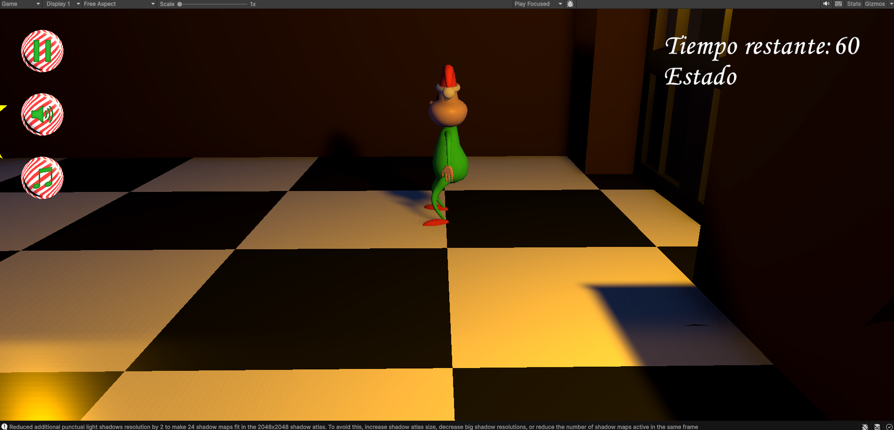
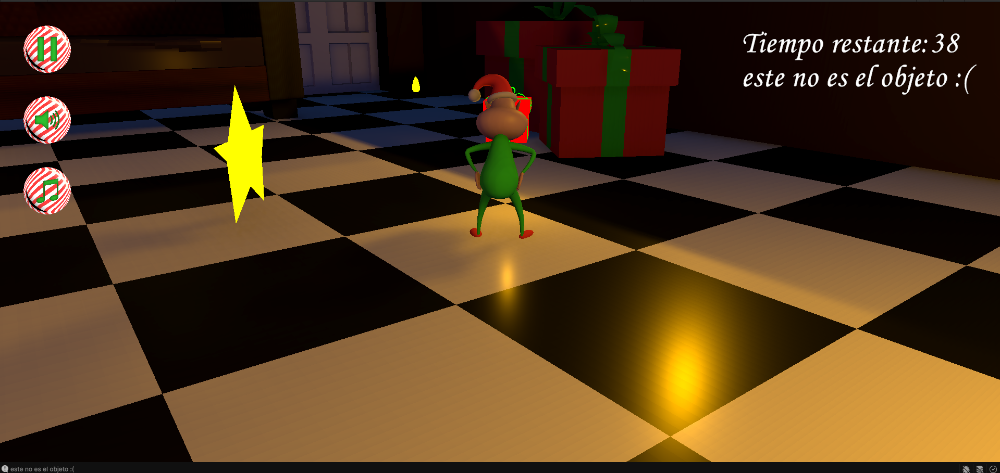
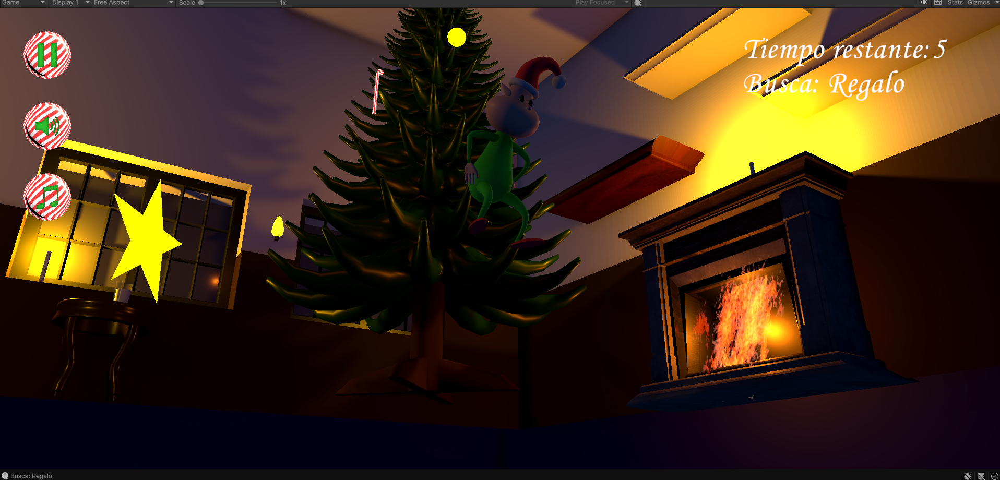
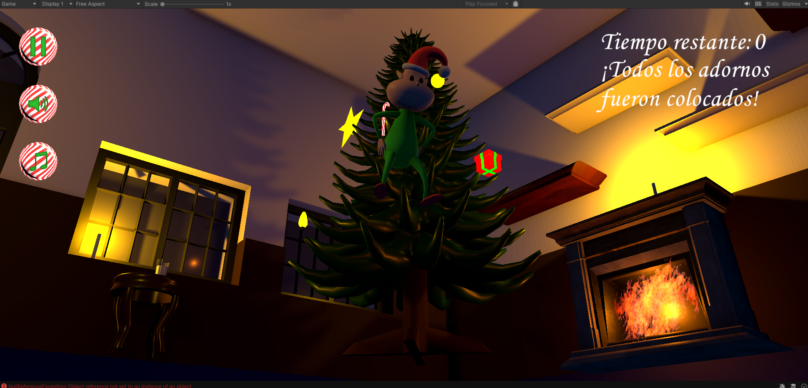

HOLIDAY
RUSH
Juego 3D desarrollado durante una Game Jam con temática navideña, donde el jugador debe encontrar diferentes objetos y decorar el árbol de Navidad antes de que se acabe el tiempo.

Gameplay
Sobre el proyecto
Holiday Rush es un juego desarrollado durante una Game Jam De 7 dias.
El jugador debe explorar el escenario y encontrar los objetos que solicita el juego. Una vez encontrado el objeto correcto, debe llevarlo hasta el árbol de Navidad para colocarlo como parte de la decoración.
El objetivo es completar todas las decoraciones antes de que el tiempo llegue a cero.
Durante el desarrollo se trabajaron diferentes conceptos de programación y desarrollo de videojuegos, incluyendo interacción con objetos, sistemas de tiempo, objetivos, interfaz de usuario y ambientación 3D.
Tecnologías
Características
Temporizador
El jugador cuenta con un tiempo limitado para completar todos los objetivos.
Búsqueda de objetos
El juego indica qué objeto debe buscar el jugador dentro del escenario.
Interacción
El jugador puede interactuar con los objetos necesarios para avanzar en la partida.
Decoración del árbol
Los objetos encontrados deben ser llevados hasta el árbol para completar la decoración.
Objetivos
El jugador debe encontrar los objetos solicitados en el orden necesario para completar la partida.
Interfaz de usuario
El juego cuenta con elementos visuales para mostrar el tiempo, los objetivos y el estado de la partida.
Galería



